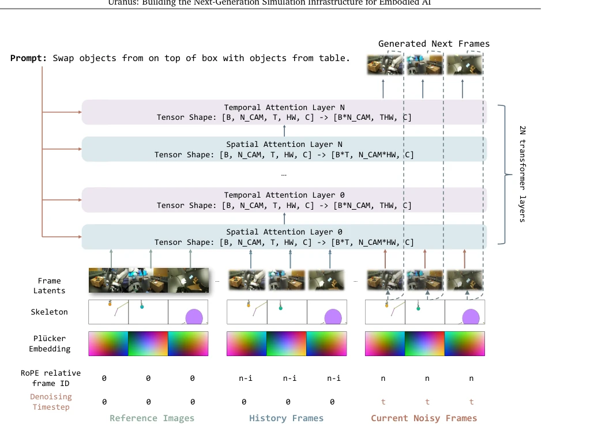
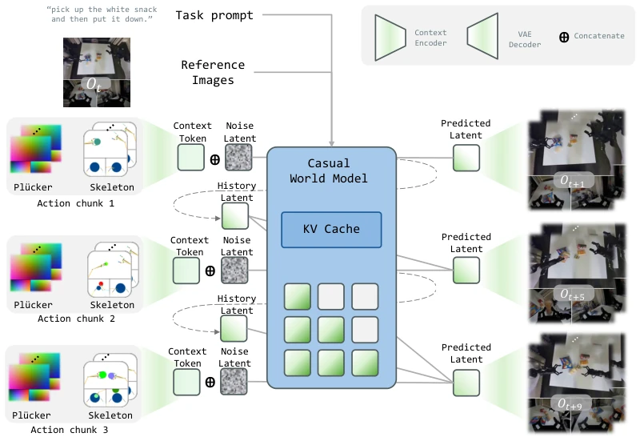
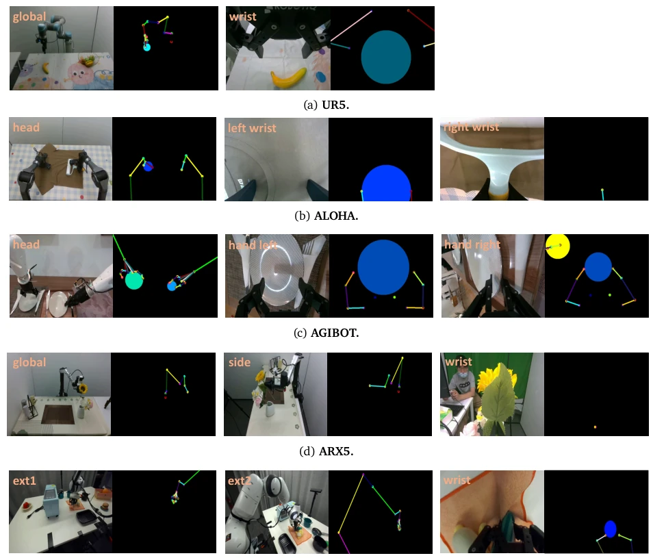
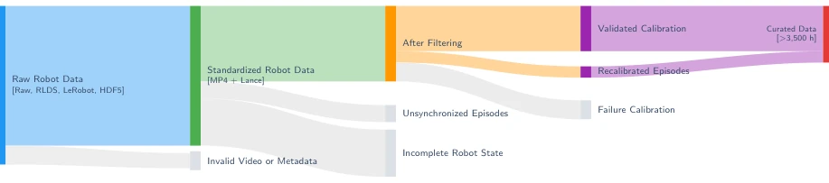
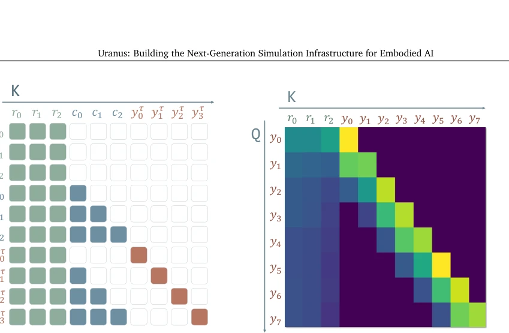
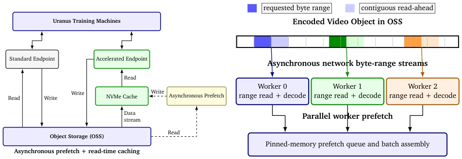
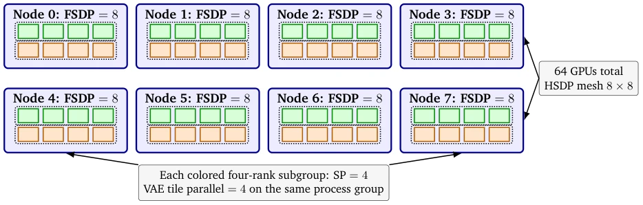
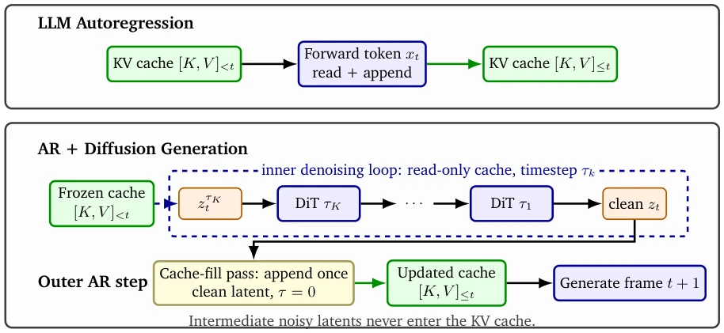
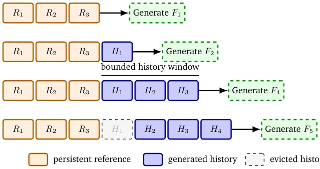
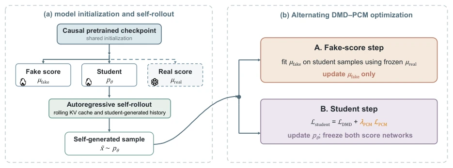

Uranus 号称下一代仿真基础设施，本质是用数据驱动的视频生成模型替代传统物理引擎。优点在于流式生成、跨机器人形态支持，24 FPS 的推理速度确实能跑闭环，这点比纯离线生成模型强。但“世界模型”终究是“做梦”，物理接触和物体状态转换在分布外数据下依然会崩，Sim-to-Real Gap 没彻底解决。基础设施堆得厚，包括数据、训练、推理全栈，但核心还是 Diffusion 的算力烧钱，对于需要精确力控的任务，这模拟器可能只是个“高保真 PPT”，适合策略训练而非物理验证。
Uranus claims to be the next-generation simulation infrastructure, essentially replacing traditional physics engines with data-driven video generation models. Its advantages lie in streaming generation and cross-robot morphology support; the 24 FPS inference speed can indeed support closed-loop operation, which is superior to pure offline generation models. However, "world models" are ultimately "dreaming"; physical contact and object state transitions still fail under out-of-distribution data, and the Sim-to-Real Gap is not thoroughly resolved. The infrastructure stack is substantial, encompassing data, training, and inference full-stack, but the core remains the high computational cost of Diffusion. For tasks requiring precise force control, this simulator may merely be a "high-fidelity PPT", suitable for policy training rather than physical verification.
研究动机Motivation
真实机器人交互成本高、风险大，传统仿真如 Isaac Sim 和 MuJoCo 需要人工构建 3D 资产和物理模型，维护成本高且存在 Sim-to-Real Gap。现有视频世界模型 [9, 10] 难以扩展为通用仿真器，常受限于特定机器人形态和任务，且推理延迟高，无法支持细粒度闭环交互。Uranus 旨在解决可扩展性、实时性和长视距稳定性问题，通过数据驱动方式降低仿真构建门槛，实现跨形态、多视角的交互。
Real robot interaction involves high costs and significant risks; traditional simulations such as Isaac Sim and MuJoCo require manual construction of 3D assets and physics models, resulting in high maintenance costs and an existing Sim-to-Real Gap. Existing video world models [9, 10] are difficult to scale into general-purpose simulators, often constrained by specific robot morphologies and tasks, while suffering from high inference latency that precludes fine-grained closed-loop interaction. Uranus aims to address scalability, real-time performance, and long-horizon stability issues, reducing simulation construction barriers through data-driven approaches to enable cross-morphology and multi-view interaction.

Figure 2: Overview of Uranus. Uranus is a multi-view image-to-video diffusion transformer for interactive robot simulation. It autoregressively predicts future multi-camera observations from encoded reference RGB frames and clean history latent frames, future joint-position trajectories rendered as temporally aligned skeleton maps, camera geometry encoded by Plücker ray embeddings, and text prompts. For each generated latent frame, four ordered RGB-time condition maps are compressed into one latent-time token slice by learned temporal–spatial projections and added to the video-latent tokens at the DiT input. Clean context tokens are assigned denoising timestep zero, while the current target latent frame is generated from noise with its actual diffusion timestep. Reference anchors use fixed
The overall architecture adopts an LLM-style autoregressive world model framework. The outer causal autoregressive loop accepts future joint trajectories, while the inner layer employs Flow-matching DiT for denoising generation. Inputs comprise reference images, historical latent frames, future joint trajectories (converted to skeleton maps), camera geometry (Plücker rays), and text. The attention mechanism alternates between spatial (cross-view fusion) and temporal (single-view dynamics) modes to reduce computational complexity. Training utilizes Teacher-Forcing causal masks and RoPE position encoding. The inference stage leverages KV Cache and streaming VAE decoding to achieve low latency. Data undergoes rigorous cleaning, containing 3300+ hours of real-world data, with pipelines constructed using Ray and Daft.

Figure 1: Autoregressive Diffusion Model Framework. Uranus combines an outer causal autoregressive loop with an inner latent flow-matching diffusion process. At rollout step 𝑡, persistent multi-view reference RGB frames and clean history latent frames are encoded together with text instructions, four future joint configurations aligned with the output RGB timestamps, and per-RGB-frame camera geometry. Conditioned on this context, the DiT iteratively transports Gaussian noise toward the next clean multi-view latent, which is decoded by the pretrained VAE into a synchronized RGB chunk of four frames per view. The generated observation is then appended to the history and reused as context for subsequent predictions, enabling joint- trajectory-conditioned long-horizon rollout.

Figure 3: Cross-Embodiment Skeleton Conditioning. Different robot bodies are converted into a shared image-space skeleton representation through online forward kinematics and camera projection. The examples show representative robot embodiments from our data, including UR5, ALOHA, AGIBOT, ARX5, and DROID.

Figure 4: Data Curation Pipeline. We first convert heterogeneous robot datasets into a common representation, then remove episodes with invalid video, incomplete robot states, or synchronization errors. Camera parameters are recalibrated when possible, and the remaining episodes are checked for geometric consistency. The final corpus contains more than 3,300 hours of real-world robot data.

Figure 5: Causal Training and Streaming Attention. Left: the teacher-forcing mask packs encoded reference anchors, clean history latent frames, and noisy target latent frames so that each target attends only to valid reference and past context. Right: the streaming-inference heatmap shows the reference attention-sink mechanism, through which generated latent frames retain access to persistent visual anchors and recent latent-frame history.

Figure 7: Data Storage and Loading Architecture. Left: object storage provides the durable data lake, while accelerated endpoints use NVMe caching and asynchronous prefetching. Right: multiple workers issue asynchronous range reads in parallel; each requested range is extended with a contiguous read-ahead region and decoded samples are assembled through a shared in-memory queue.

Figure 8: Distributed Training Topology. The 1.3B Uranus model is trained on eight nodes with eight GPUs per node. The HSDP mesh contains eight data-parallel replicas and eight FSDP shards per replica. Within every node, the eight ranks are partitioned into two four-rank sequence-parallel groups. Distributed VAE tile encoding and decoding reuse the corresponding SP process group, avoiding an additional communication-group layout.

Figure 9: KV-Cache Update Semantics. An LLM reads prior keys/values and appends the current token’s keys/values in the same forward pass. In Uranus, all DiT evaluations inside the denoising loop read a frozen cache while using the current denoising timestep 𝜏𝑘; intermediate noisy latents are not cached. After denoising finishes, a separate outer-loop cache-fill pass processes the clean latent frame with timestep zero and appends its keys/values exactly once.

Figure 10: Latent-Frame-Aware Sliding-Window KV Cache. The cache is first prefixed with persistent encoded reference-anchor blocks 𝑅1, 𝑅2, 𝑅3. Each generated latent frame, corresponding to a four-frame RGB chunk, is appended as a history block 𝐻𝑡and becomes available to the next decoding step. The history-window size counts latent-frame blocks. Once it reaches capacity, appending a new latent frame evicts the oldest history block (shown dashed), while all reference-anchor blocks remain pinned as stable visual anchors.
The datasets originate from AgiBot, DROID, RoboChallenge, etc., totaling 3300+ hours. Benchmarks include WorldOlympiad, with comparisons against GE-Sim 2.0. Evaluation covers OOD generalization capabilities (scene, trajectory, task, morphology). Results indicate strong action controllability, good multi-view consistency, and slow long-horizon degradation. However, limitations exist, such as inaccurate predictions of contact dynamics and object state transitions under challenging distributions. Ablation studies verify the effectiveness of distillation and causal training, demonstrating superior stability in long-horizon interaction compared to baselines.

Figure 6: Self-Rollout DMD Fine-Tuning with PCM Regularization. The student and the two score networks are initialized from the same causal pretrained checkpoint, and the student generates training samples under self forcing history. Fine-tuning alternates a fake-score step with a student step. The student objective combines distribution-level DMD supervision with PCM consistency across adjacent diffusion phases to regularize few-step generation and improve long-horizon rollout stability.